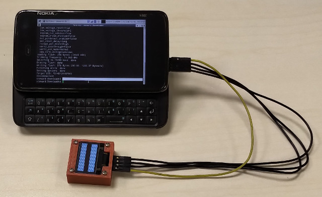
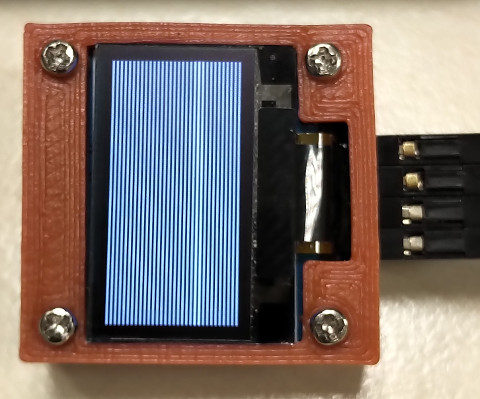

Steward
分享是一種喜悅、更是一種幸福
微處理器 - STCmicro STC15W204S - Assembly - 0.96" OLED 128x64 SSD1306
參考資訊：
https://cdn-shop.adafruit.com/datasheets/SSD1306.pdf
https://www.stcmicro.com/datasheet/STC15F2K60S2-en.pdf
https://github.com/adafruit/Adafruit_SSD1306/blob/master/Adafruit_SSD1306.cpp
main.s
i2c_sda set 0xcc
i2c_scl set 0xcd
i2c_addr equ 0x78
lcd_width equ 128
lcd_height equ 64
cmd_contrast equ 0x81
cmd_disp_resume equ 0xa4
cmd_normal_disp equ 0xa6
cmd_invert_disp equ 0xa7
cmd_disp_off equ 0xae
cmd_disp_on equ 0xaf
cmd_disp_offset equ 0xd3
cmd_com_pins equ 0xda
cmd_vcom_detect equ 0xdb
cmd_clock_div equ 0xd5
cmd_pre_charge equ 0xd9
cmd_multiplex equ 0xa8
cmd_start_line equ 0x40
cmd_memory_mode equ 0x20
cmd_column_addr equ 0x21
cmd_page_addr equ 0x22
cmd_scan_dec equ 0xc8
cmd_seg_remap equ 0xa0
cmd_charge_pump equ 0x8d
.org 0h
jmp _start
.org 100h
_start:
call ssd1306_init
call ssd1306_set_col_addr
call ssd1306_set_page_addr
call i2c_start
mov a, #i2c_addr
call i2c_write
mov a, #40h
call i2c_write
mov r4, #16
m0:
mov r5, #64
m1:
mov a, #55h
call i2c_write
djnz r5, m1
djnz r4, m0
call i2c_stop
jmp $
delay:
mov r0, #10
djnz r0, $
ret
i2c_start:
setb i2c_sda
setb i2c_scl
call delay
clr i2c_sda
call delay
clr i2c_scl
ret
i2c_stop:
call delay
clr i2c_sda
call delay
setb i2c_scl
call delay
setb i2c_sda
ret
i2c_write:
push 4
push 5
mov r4, #8
mov r5, a
i0:
mov a, r5
rlc a
mov r5, a
jc i1
clr i2c_sda
sjmp i2
i1:
setb i2c_sda
i2:
call delay
setb i2c_scl
call delay
clr i2c_scl
djnz r4, i0
call delay
setb i2c_sda
call delay
setb i2c_scl
call delay
mov c, i2c_sda
call delay
clr i2c_scl
pop acc
mov r5, a
pop acc
mov r4, a
ret
send_cmd:
push 4
mov r4, a
call i2c_start
mov a, #i2c_addr
call i2c_write
mov a, #0
call i2c_write
mov a, r4
call i2c_write
call i2c_stop
pop acc
mov r4, a
ret
send_data:
push 4
mov r4, a
call i2c_start
mov a, #i2c_addr
call i2c_write
mov a, #40h
call i2c_write
mov a, r4
call i2c_write
call i2c_stop
pop acc
mov r4, a
ret
ssd1306_init:
mov a, #cmd_disp_off
call send_cmd
mov a, #cmd_clock_div
call send_cmd
mov a, #80h
call send_cmd
mov a, #cmd_multiplex
call send_cmd
mov a, #3fh
call send_cmd
mov a, #cmd_disp_offset
call send_cmd
mov a, #0
call send_cmd
mov a, #cmd_start_line
call send_cmd
mov a, #cmd_charge_pump
call send_cmd
mov a, #14h
call send_cmd
mov a, #cmd_memory_mode
call send_cmd
mov a, #0
call send_cmd
mov a, #cmd_seg_remap | 1
call send_cmd
mov a, #cmd_scan_dec
call send_cmd
mov a, #cmd_com_pins
call send_cmd
mov a, #12h
call send_cmd
mov a, #cmd_contrast
call send_cmd
mov a, #0cfh
call send_cmd
mov a, #cmd_pre_charge
call send_cmd
mov a, #0f1h
call send_cmd
mov a, #cmd_vcom_detect
call send_cmd
mov a, #40h
call send_cmd
mov a, #cmd_disp_resume
call send_cmd
mov a, #cmd_normal_disp
call send_cmd
mov a, #cmd_disp_on
call send_cmd
ret
ssd1306_set_col_addr:
mov a, #cmd_column_addr
call send_cmd
mov a, #0
call send_cmd
mov a, #lcd_width - 1
call send_cmd
ret
ssd1306_set_page_addr:
mov a, #cmd_page_addr
call send_cmd
mov a, #0
call send_cmd
mov a, #lcd_height / 8 - 1
call send_cmd
ret
.end
編譯
$ mcu8051ide --compile main.s
燒錄
$ sudo stcgal -P stc15 main.hex
完成

